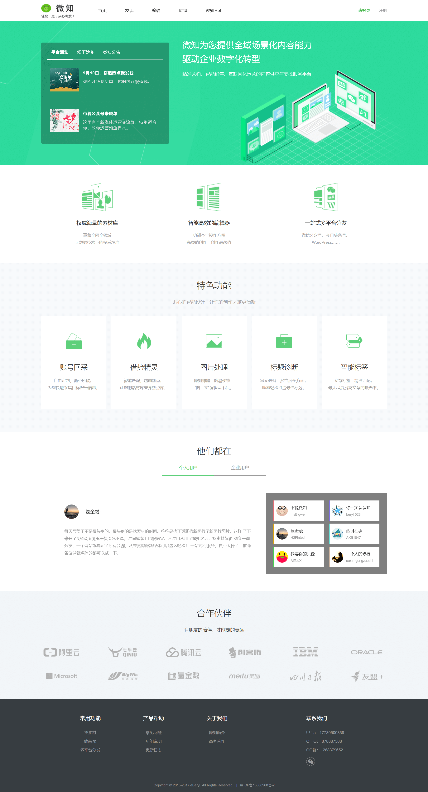
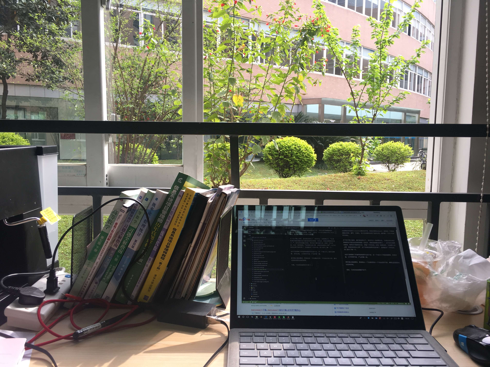

我没想到会把这种口水话记录在博客里，也算是对职业生涯的记录吧。
“微知”是我第一个参与孵化的项目。回想这两年多一路走来，每个加班的夜晚都历历在目。
朋友说我“真能呆”，一呆就是在一个小公司呆了两年。我想大概是因为爱？微知从无到有，再到试图推广、试图融资、试图转型，都记录在了这五六十次上线发布里了。
从祖传的多页到引入requireJs模块化开发，再到过渡到webpack，都是我一手慢慢调教过来的，重构、工程化，至少在这期间学到了很多东西。微知像一个孩子在我手中成长。

天下无不散之宴席，就当毕业了吧O(∩_∩)O。曾经听过一段跳槽忠告，“如果你现在做的事情再也不能为你的简历增添一份色彩，那就是跳槽的时候了。”，这句话对我触动很深，程序员不像其他行业，求稳？不存在的。还有一段类似的，“你周围人的上限，就是你的成长上限”，这个时候也是离开的时候了，自我驱动？不存在的，闭门造车了解一下。
也许只是想换个环境导致我离开也说不定，在一个地方久了就容易懒惰，享受安逸，工作效率不高，产出质量一般。
新环境让我很期待，即使是从一个坑跳到另外一个坑也在所不辞，哪有过的轻轻松松的码农呢。
至此，口水话也说得差不多了，其实我最舍不得的是这一米阳光和这满眼的绿色
